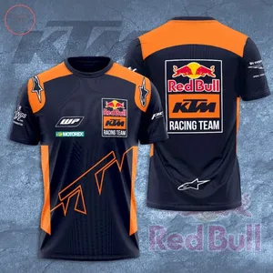
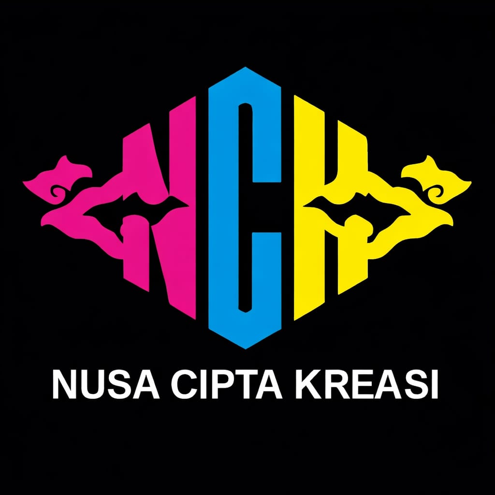
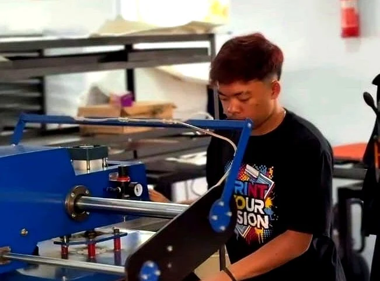
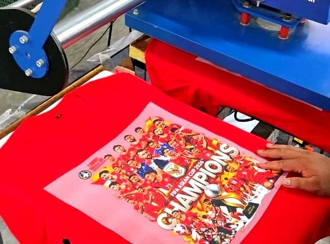
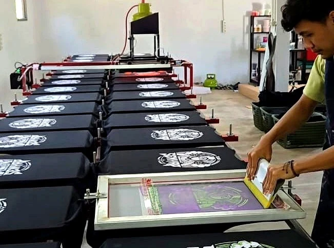
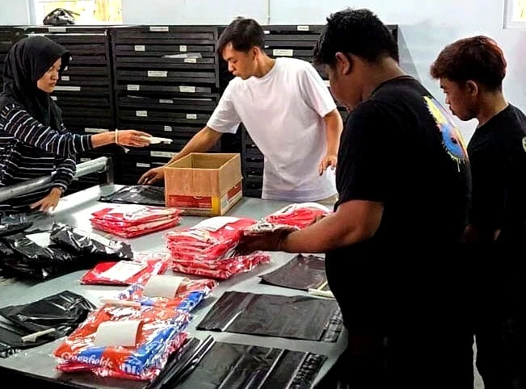
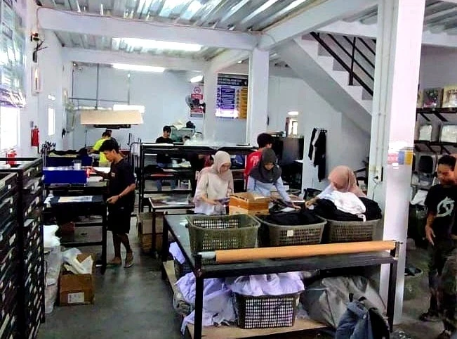

01 / SUBLIMASIJersey sublimasi
10+ pcsUntuk olahraga, tim, komunitas, dan koleksi seller. Bahan ready Milano, ukuran dewasa M–4XL. Kerah dan lengan mengikuti spesifikasi.
Bahas produksi jersey ↗Ide sudah ada. Jualan jalan.
Produksi masih menyita perhatian?
Jual jersey dan kaos dengan desain Anda sendiri. NCK bantu produksi hingga pengiriman atas nama toko Anda, agar Anda bisa fokus mengembangkan penjualan.


01 / RUANG UNTUK BISNIS ANDA
Untuk seller marketplace, pemilik brand, dan pelaku bisnis fashion yang membutuhkan partner produksi.
Uji desain kaos DTF mulai 1 pcs. Jersey sublimasi dan sablon plastisol mulai 10 pcs.
Gunakan desain custom atau katalog. Dropship dengan kemasan standar polos; label khusus dapat dibicarakan.
Pilih produk jadi atau jasa printing pada pakaian dan bahan yang Anda siapkan.
02 / PRODUK & JASA
Dari jersey untuk komunitas hingga kaos untuk koleksi brand. Mulai dari produk yang paling sesuai dengan pelanggan Anda.

01 / SUBLIMASIUntuk olahraga, tim, komunitas, dan koleksi seller. Bahan ready Milano, ukuran dewasa M–4XL. Kerah dan lengan mengikuti spesifikasi.
Bahas produksi jersey ↗
02 / DTFKaos cotton 24s dengan desain Anda. Tersedia produk jadi atau layanan printing dan press pada kaos yang Anda sediakan.
Mulai dari satu kaos ↗
03 / PLASTISOLSablon manual untuk kebutuhan desain khusus. Penawaran disesuaikan dengan kerumitan desain dan jumlah produksi.
Diskusikan desain saya ↗Foto produk dan proses NCK. Desain yang ditampilkan merupakan contoh hasil, bukan pernyataan afiliasi atau kerja sama dengan merek pada produk.
DTF: printing dan press. Sublimasi: printing dan press, belum termasuk bahan dan jahit. Anda dapat menyediakan pakaian atau bahan sendiri.
Kirim langsung ke pembeli atas nama toko Anda. Kemasan standar polos; label, hang tag, dan kemasan khusus mengikuti kesepakatan.
Dapat diatur melalui mitra vendor. Ketersediaan, kapasitas, biaya, dan jadwal dikonfirmasi sesuai kebutuhan pesanan.

03 / DARI PRODUKSI KE PELANGGAN
Punya desain dan pelanggan, tetapi belum punya tim produksi? Kami membantu mengerjakan pakaian dan menyiapkan pengiriman dropship sesuai pengaturan order.
04 / CARA MULAI
Spesifikasi, biaya, dan estimasi waktu dibahas sebelum produksi. Mulai dengan cerita tentang kebutuhan Anda.
Jenis produk, desain, bahan, jumlah, ukuran, dan target waktu.
Admin mengecek kebutuhan, menyiapkan penawaran, dan mengonfirmasi desain serta jadwal.
Produksi berjalan setelah desain disetujui dan bahan siap, dilanjutkan QC serta finishing.
Pesanan disiapkan untuk dikirim ke Anda atau langsung ke pembeli sesuai kesepakatan.
Acuan produksi sekitar H+3 setelah desain disetujui dan seluruh bahan siap. Estimasi akhir mengikuti spesifikasi, volume, antrean, serta ketersediaan vendor. Jadwal kirim dikonfirmasi per pesanan.
05 / KENAL NCK LEBIH DEKAT
PT. NUSA CIPTA KREASI adalah perusahaan printing dan produksi pakaian yang berbasis di Kabupaten Kuningan, Jawa Barat.
Berawal dari kebutuhan produksi bisnis sendiri, NCK mengembangkan fasilitas untuk mendukung kontrol harga dan kualitas. Kini layanan NCK terbuka bagi seller marketplace, brand, dan pelaku bisnis fashion.
Identitas awan Mega Mendung pada logo membawa cerita kedekatan NCK dengan Kuningan dan Cirebon. Energi warna kami mengiringi satu tujuan: membantu ide Anda menjadi produk.

06 / SEBELUM MULAI
Bisa untuk kaos DTF, mulai 1 pcs. Jersey sublimasi dan sablon plastisol minimum 10 pcs.
Anda bisa mengajukan desain sendiri atau menggunakan desain katalog. Kirim referensi kebutuhan kepada admin untuk membahas pilihan yang tersedia.
Penawaran mengikuti produk, bahan, ukuran, desain, jumlah, serta kebutuhan finishing dan kemasan. Kirim detail kebutuhan agar admin dapat memberikan penawaran yang sesuai.
Bisa. Pengiriman dropship menggunakan identitas toko seller sesuai pengaturan order. Kemasan standar polos; kebutuhan label, hang tag, atau kemasan khusus perlu disepakati lebih dahulu.
Bisa untuk jasa printing. DTF meliputi printing dan press; sublimasi meliputi printing dan press, belum termasuk bahan dan jahit. Kecocokan bahan dan spesifikasi dibahas bersama admin sebelum proses.
Siapkan jenis produk, desain atau referensi, bahan, jumlah, ukuran, dan target waktu. Jika belum lengkap, ceritakan kebutuhan Anda terlebih dahulu melalui WhatsApp.
LANGKAH BERIKUTNYA MILIK ANDA
Ceritakan kebutuhan Anda. Kami bantu membahas pilihan produk, spesifikasi, dan rencana pengerjaannya.
Konsultasi lewat WhatsApp ↗WhatsApp admin · 0851 2999 0202